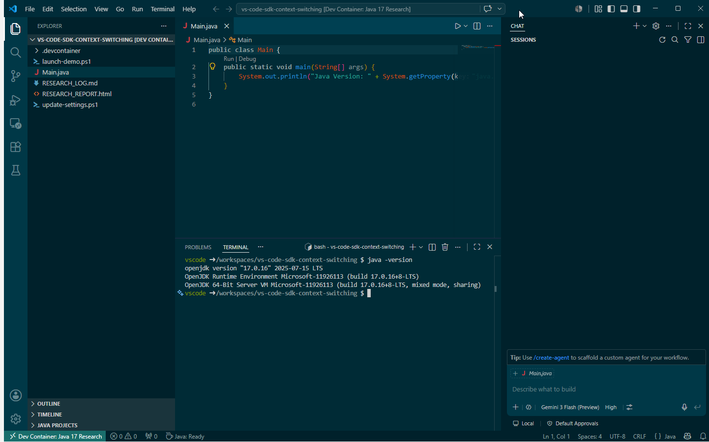
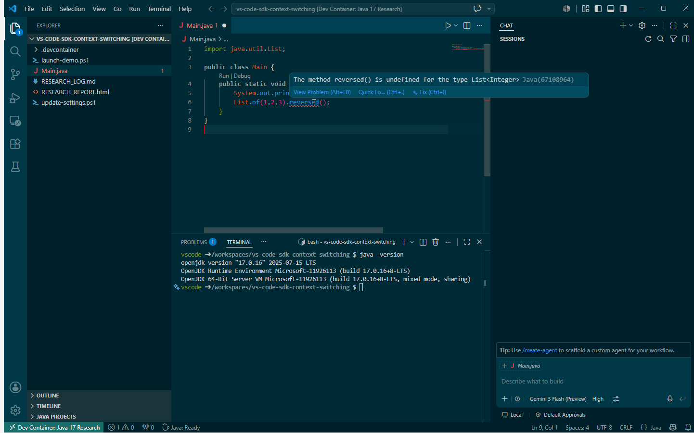
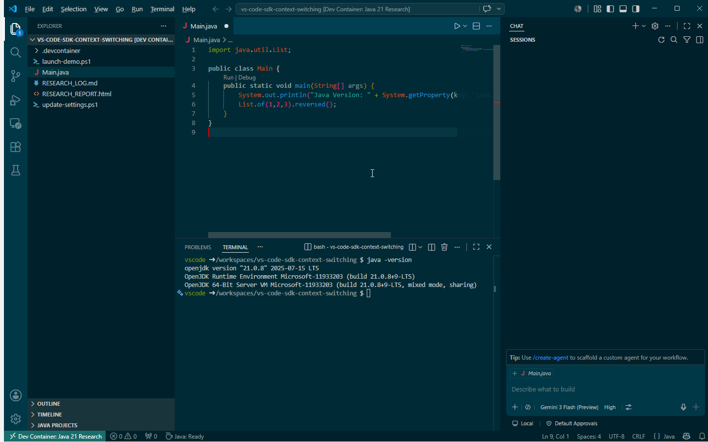

Dev Container Side-by-Side Runbook
Professional reference for running different Java versions in parallel with isolated IntelliSense and predictable startup behavior in VS Code.
Two VS Code windows
Container-isolated Java language server
Validated with runtime + IntelliSense checks
Demo examples: Java 17 and Java 21
Outcome Summary
- Both Java contexts launch from a single script.
- Each window attaches to its own container image.
- Java version and API intelligence are correctly isolated.
- Pattern is reusable for any supported version pair.
Java 17
Separate runtime + IntelliSense behavior
Java 21
Separate runtime + IntelliSense behavior
2 Windows
Side by side, no SDK conflict
Launch Script
./launch-demo.ps1
Context Paths
- .devcontainer/java17
- .devcontainer/java21
Major Benefit: Host JDK installation is not required. Compile, run, and IntelliSense use the JDK inside each container.
Required Configuration
Dev Container wrappers
- .devcontainer/java17/.devcontainer/devcontainer.json
- .devcontainer/java21/.devcontainer/devcontainer.json
Each wrapper defines image, workspace mount, and workspace folder for stable resolution.
Host settings alignment
| Setting |
Expected Value |
| dev.containers.dockerPath |
Rancher Desktop docker.exe path |
| remote.containers.dockerPath |
Rancher Desktop docker.exe path |
| dev.containers.executeInWSL |
false |
| remote.containers.executeInWSL |
false |
Validation Procedure
This procedure is version-agnostic. Java 17 and Java 21 are used below as demo examples.
Step 1: Runtime check
Run in each container terminal:
java -version
- Example A (Java 17 demo) should report version 17.
- Example B (Java 21 demo) should report version 21.
Step 2: IntelliSense split check
Use this exact line in both windows:
List.of(1,2,3).reversed();
- Example A (Java 17 demo): reversed() should be undefined (error).
- Example B (Java 21 demo): reversed() should be supported (no error).
This pair of checks confirms both runtime and language tooling are bound to the correct container context.
Screenshot Evidence
Evidence shown below is from the Java 17/21 demo pair to illustrate the general approach.

Java 17 runtime verification
Java 21 runtime verification

Java 17 IntelliSense: reversed() undefined

Java 21 IntelliSense: reversed() supported
Known Risk and Recovery
Rancher Desktop backend instability can break launches even when repository configuration is correct.
- Confirm Rancher Desktop is fully started.
- Validate Docker health with docker.exe version.
- Rerun launch-demo.ps1.
Host Machine Requirements
- No host JDK install is needed for this approach.
- Required: Docker runtime (for example Rancher Desktop).
- Required: VS Code with Dev Containers extension.
JDK lifecycle management is handled in container images/configuration, not on the host.